Osambit — Software Engineer (Blockchain) & Technical Consultant
Client-facing architecture work alongside delivery: low-latency infrastructure for DeFi/MEV strategies, with transactions landing inside the first slot.
Software Engineer — Java · Rust · Distributed Systems · Athlone, Ireland
I'm a 21-year-old software engineer based in Athlone, Ireland. Java was my first language and still the one I reach for by default; Rust came later, when I got interested in how Solana works under the hood, and it's what I now write low-latency services in. I work at Osambit as a software engineer and technical consultant — I sit with clients to work out what they actually need, design the architecture, and then stay on to build it. Before that I spent a year and a half at EQUI Labs, a three-person startup, building backends, indexers and Solana programs.
I'm studying for an M.Sc. in Software Design with AI for Cloud Computing at Technological University of the Shannon, and I like taking things apart to understand how they work underneath. I also enjoy presenting technical topics to an audience — there are slides from a few of those talks further down this page.
Osambit — Software Engineer (Blockchain) & Technical Consultant
Client-facing architecture work alongside delivery: low-latency infrastructure for DeFi/MEV strategies, with transactions landing inside the first slot.
EQUI Labs — Solana Blockchain Developer
Backend, a real-time indexer over Solana DEX pool rates, Anchor programs, and a Java/Spring Boot observability service.
SKLO — Hardware Technician → Service Center Coordinator
Coordinated a 7-person repair team; iPhone screen refurbishment and micro-soldering.
The full version, with numbers, is in the CV. The projects below are the part a CV can't show.
I usally respond to all emails within 24 hours.
Contact meHere are some of my projects or projects I contribute to:
May 2024 — present · three major versions, the current one is a full rewrite
GitHub repo: PRIVATE FOR A REASON · Program: Solscan — the on-chain half is open for anyone to read
An arbitrage system for Solana DEXes that I have been building since May 2024. It has gone through three architectures: an indexer over a self-hosted Jupiter API, then its own indexer and simulation service, and now Lumen — a shred-driven SVM bank that reacts to transactions before the chain confirms them.
The previous versions waited for state: an indexer told the bot a pool had changed, and only then could it price and act. Lumen removes the wait. It consumes the raw shred stream, simulates every relevant transaction in an embedded solana-svm engine against a speculative copy of chain state, and prices what that transaction did to the pool while the chain is still confirming it.
A private bank: LMDB-backed accounts, a real SVM on top, two forks over the confirmed root in the shape of agave's own bank forks — a speculative head the hot path reads, and a pending fork where confirmed blocks are replayed and hash-verified against the network before they are promoted.
An account-lock scheduler modeled on agave's AccountLocks / unified scheduler: conflicting transactions simulate strictly in order, independent ones in parallel, O(accounts) per scheduling event.
Hand-built thread pipeline, no async runtime on the hot path: router, core-pinned workers, executor gate, dispatcher — each stage with its own histogram.
Chain-exact details I got wrong first and fixed by reading the validator: blockhash from the slot's last tick, lookup-table slot rules, program delay visibility.
A sender router over Jito, Astralane, Helius, NextBlock, 0slot, Falcon, FlashBlock and direct TPU, probed continuously so each transaction takes the path closest to the current leader.

A real Raydium V4 swap simulates in about 0.2 ms p50 on the production Xeon with the x86-64 JIT. The other rows are the same benchmark on an Apple M-series laptop, where only the sBPF interpreter exists — a pessimistic floor, not the real cost:
| Path | p50 | p99 |
|---|---|---|
| Raydium V4 swap — production Xeon, JIT | 0.2 ms | — |
| Raydium V4 swap — laptop, interpreter (16 384 CU) | 1.01 ms | 1.22 ms |
| Hot path: speculative execute + bookkeeping, 200 tx / slot | 0.98 ms | 1.14 ms |
| System transfer (engine floor) | 59 µs | 110 µs |
| Account-lock scheduler, per transaction | 3.5 µs | |

Sender probe table: every landing provider, every region, from the bot's box — Amsterdam under a millisecond, the US east coast at seventy.
Full write-up: pipeline, state model, benchmarks →
This is probably one of the biggest achievements for me as there are barely 10 projects in the world which have 100% transaction landing success rate as this project (I personally have seen only 2)
Support stopped in Sep 2025: the architecture had hit its ceiling, and Lumen is the redesign.
Software works by having indexer which monitors blockchain calculates prices every time it receives an update from gRPC.
Software has its own simulation service so there is no need to make any API calls which minimizes the delay.
Deployed program recalculates the given transaction to check if any changes happen during transaction landing.
Made in rust to maximize performance.
Does 12-14k transactions on average per day
Grafana is used to monitor overall performance of the bot (internal use only)


Jun 2026 — active development
GitHub repo: BadStream
Turns an Android phone into a self-contained live-streaming camera — point it at a scene, pick a destination, go live to any RTMP, RTMPS or SRT ingest. Inspired by Moblin on iOS, aiming for a real broadcast tool rather than a toy.
The transport stack is written from scratch in native C/C++ instead of wrapping a black-box SDK — RTMP handshake, chunking, AMF0 and FLV, MPEG-TS muxing, and SRT through libsrt — so the entire streaming path stays under the app's control.
H.264 and H.265 with automatic codec negotiation, HDR (HLG10) capture-to-encode where the device supports it, and graceful SDR fallback.
Adaptive bitrate in the native layer, foreground-service streaming that survives backgrounding, and local MP4 recording alongside the live feed.
Dual-camera picture-in-picture: two independent Camera2 inputs composited through a shared GLES compositor. The PiP window is draggable, resizable and corner-snapping, and tap-to-swap between cameras is blink-free because both run as separate inputs.
Capability-driven — reads each device's certified concurrent-camera combinations at runtime and only offers lens and PiP pairs the hardware actually supports, degrading instead of failing.
OBS WebSocket remote: list and switch scenes and start or stop the OBS stream from the phone, with automatic "Be Right Back" switching when link health degrades.
Kotlin and Jetpack Compose (Material 3) on top of the native core over JNI, with a landscape-first viewfinder.


Full write-up, videos and architecture →
Mar 2026
Website: Not hosted
DataVisualization uni project to visualize Solana validators on the map. Has few tools to measure latency to the validators which wont be very accurate but will give the basic understanding of routing
Map has several visualization modes to show validators versions, amount of stake, routing hops, etc.
Each hover on validator shows full info on IP, ports, ISP, stake, pubkey


Im planing to open-source this DEX in the coming weeks | 25 Feb 2026
Website: Not hosted yet
GitHub smart-contract repo: GitHub repo
GitHub front-end repo: private for now
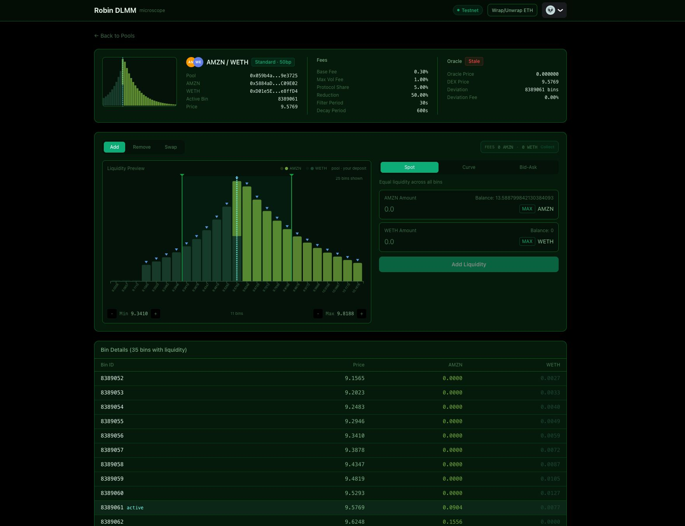
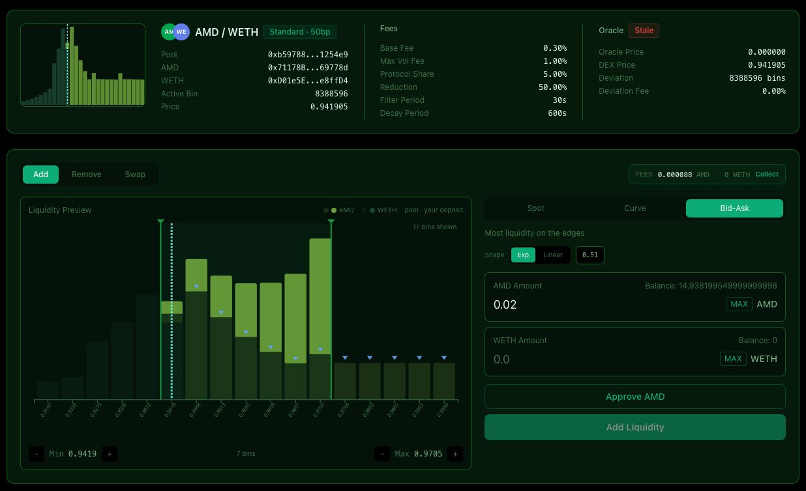
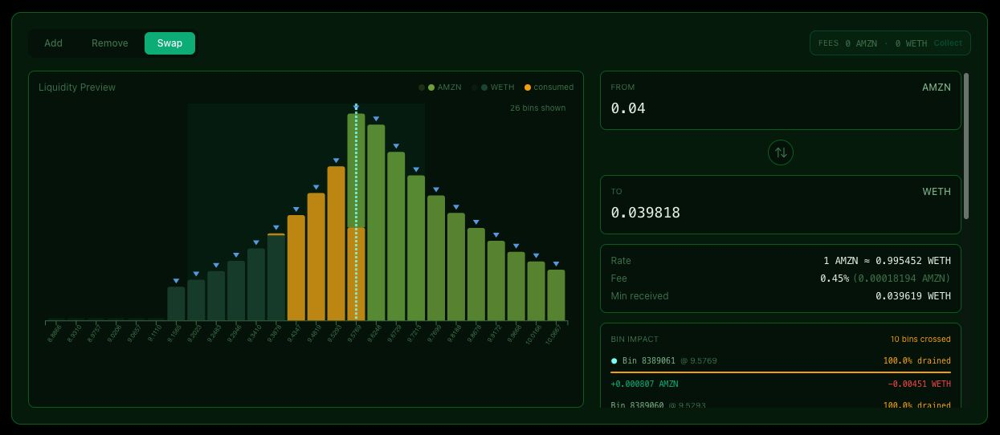
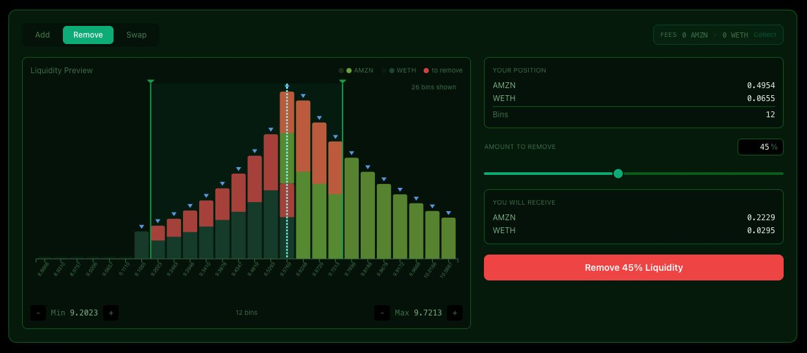
Whole DEX is developed with Solidity (Im more SVM guy rather than EVM so thanks to Claude Code for helping out in some cases). Main goal is to make dynamic fees based on spread with Oracle price and amount of swaps within the time window (activity-based fee).
SC Architecture UML
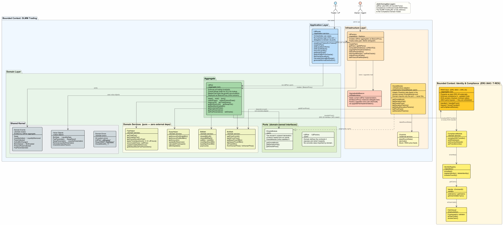
19 Feb 2026: Base implementation with working LP functions, swapping and fees calculations.
Aggregator/Swaping tool/Wallet manager
Built with the EQUI Labs team for the Solana Breakout Hackathon (14 Apr 2025) — designed and shipped as a working product inside the competition window.
Website: Equi Swap
Pitch: Equi Swap - Pitch 2025
GitHub repo: equi-swap (front-end only)


We use our own indexer with microservice architecture. Each user is handled in a new thread with indexer as a separate service
Tech diagram

25 Jun 2025: Private beta.
Small (6x3cm) portable device which you can talk to while holding the pressure sensor and get a response on display
Device connects to a phone with BLE and requires a simple android app which works as a communicator between device and server, so you dont need to connect this device to a wifi or buy separate sim card
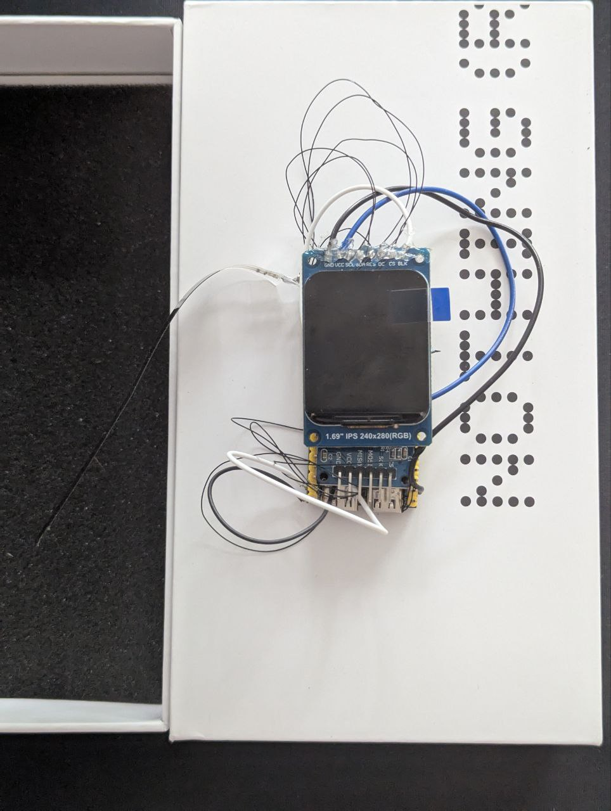
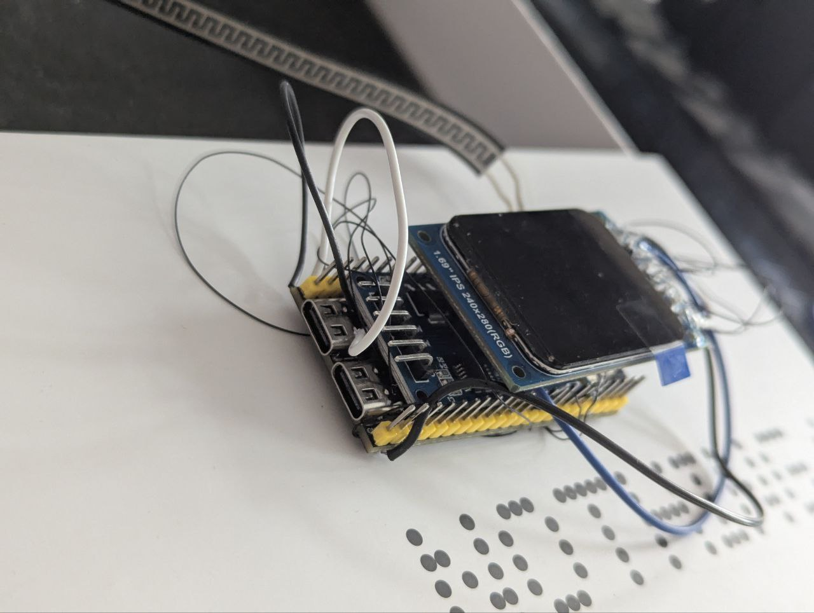
A mobile app that uses AI to detect whether a given food item is a hotdog or not a hotdog. Originally a fun parody project, it demonstrates skills in machine learning, image classification, and mobile development.
UI mimics the original app from the HBO series Silicon Valley
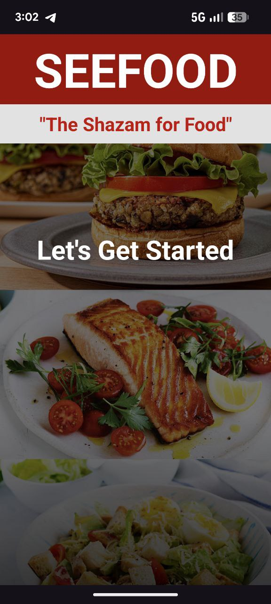
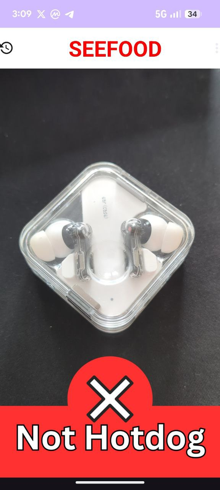
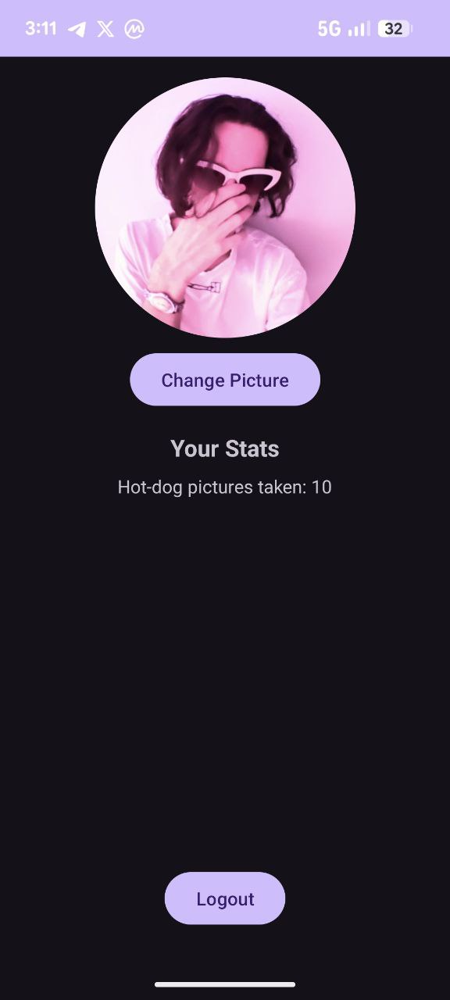
The main idea of this project is to make a GUI and web site application which will be able to work with SQL databases, will be fully customizeble to use it for any needs.
GitHub repo: LibraryERP


I tried to make the whole application with mvc design pattern so its easy to make changes and make updates to it.
The whole functionality available at the moment is represented on the diagram bellow.
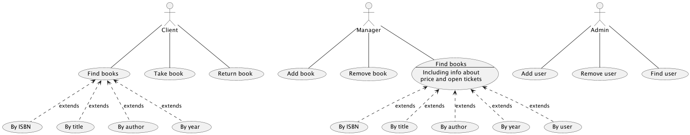
10 Aug 2023: Finally connected DB so you not losing any progress after closing the application. Finally made a GUI interface for the application and got rid of termianl view.
The talks are arranged with themes and have chronological structure. The ones are on the top are the most recent ones. Here are some of my public talks:
Slides (Eng)
Here is a presentation that I made for my university on how does different type of sync works inside any game. Presented in 2023 in TUS for engineering students. Got a skill badge for presenting from TUS (check LinkidIn certification group).
Slides (Eng)
This presentation is maded with my classmates for the first year of uni. The presentation covers how does potentiometer works, common use cases etc. Presented in 2022 in TUS in class.
Slides (Ukr) 
Note: this presentation is for entry level students. The presentation covers hash functions, checksum and few other topics. Not much to talk about, really small presentation used to present it at the end of 2021 in Kyiv College of Communication.
An honest read on where I actually stand, rather than a list of logos.
My first language and the one I'm strongest in. Multi-service applications with Spring Boot, JPA/Hibernate, REST APIs, MySQL and PostgreSQL, tested with JUnit and Mockito.
Production low-latency services: Tokio, pinning threads to cores, cache-conscious data layout. Picked it up for Solana work and it's now my second language.
Validator internals, Turbine, leader schedule and transaction landing, mostly from an MEV perspective. Anchor programs, CPIs and compute-unit optimisation.
Linux, Docker, Git, GitLab CI, ZeroMQ, AWS SQS and Secrets Manager. Architecture and infrastructure design is the part of a project I care about most — I think it decides half of whether it succeeds.
Backend APIs and dashboards. Enough to be useful across the stack, not where my depth is.
ESP32 and Arduino devices talking to sensors and REST APIs — see the AI assistant project below.
Enough to design and ship the Robin DLMM DEX. I'm an SVM person rather than an EVM one.
M.Sc., Software Design with AI for Cloud Computing NFQ Level 9, in progress
B.Sc. (Honours), Software Design with AI for Cloud Computing NFQ Level 8
B.Eng., Computer Engineering NFQ Level 7
Higher Certificate, Network Technologies & Telecommunications
Google Cloud
Google Career Certificates
Cisco Networking Academy
Technological University of the Shannon
The complete set, including the remaining Google certificates, is on my LinkedIn profile.
Solana Breakout Hackathon
Superteam Ireland